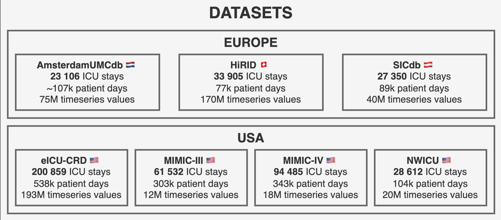

reprodICU Data Source#
The reprodICU source provides access to the largest harmonized critical care dataset publicly available, integrating data from 469,822 ICU admissions across seven major public datasets from four countries.
🌍 Unprecedented Scale and Scope
reprodICU is a freely accessible critical care dataset developed at the Institute of Medical Informatics (IMI) at Charité - Universitätsmedizin Berlin. It harmonizes data from multiple healthcare centers across the US and Europe, spanning from 2001 to 2022.
📊 Dataset Overview
📈 Scale: 469,822 ICU admissions from ~350k patients
🗓️ Time Range: 2001-2022 (21 years of data)
📍 Geographic: Multiple centers across US and Europe
🔬 Variables: 136 routinely collected physiological variables, diagnostic test results, and treatment parameters
🔗 GitHub: cub-corr/reprodicu
📚 Documentation: wiki.reprodicu.org
Overview#
reprodICU represents a breakthrough in critical care research by providing standardized access to previously incompatible datasets. The harmonization process uses established clinical vocabularies (SNOMED, LOINC, RxNorm) and follows the structure of German Medical Informatics Initiative modules while applying minimal preprocessing to preserve source fidelity.
Included Datasets#
reprodICU harmonizes seven major public ICU datasets from multiple countries and healthcare systems:
{kind=link}

🌍 Global Coverage
The integrated datasets span 4 countries (US, Netherlands, Switzerland, Austria) and represent diverse healthcare systems, patient populations, and clinical practices, enabling robust external validation and generalizability studies.
Architecture: Axioms and Concepts#
reprodICU follows a principled data architecture distinguishing between:
Underivable datapoints that cannot be calculated:
Patient heart rate
Laboratory measurements
Basic demographics
Raw physiological signals
Calculable variables derived from axioms:
Clinical scores (SOFA, APACHE, SAPS)
Mortality predictions
Derived vital signs
Complex clinical indices
Configuration#
✅ Variable Extraction Support
The reprodICU data source supports extraction of 30+ variables including:
Laboratory values: Sodium, Potassium, Creatinine, Glucose, Hemoglobin, etc.
Vital signs: Heart rate, Blood pressure, Temperature, Respiratory rate, etc.
Patient information: Age, Weight, BMI, Mortality outcomes, etc.
Clinical scores: Glasgow Coma Scale components, etc.
Variables are extracted from parquet files using structured and non-structured data patterns.
Basic Setup#
from corr_vars import Cohort
# Configure reprodICU data source
cohort = Cohort(
obs_level="icu_stay",
sources={
"reprodicu": {
"path": "/path/to/reprodICU_files"
}
}
)
print(f"reprodICU cohort: {len(cohort.obs)} ICU admissions")
🔐 Access Requirements
You must have access to the reprodICU dataset files.
Multi-Source Configuration#
reprodICU can be combined with any other configured source in a single cohort:
cohort = Cohort(
obs_level="icu_stay",
load_default_vars=False,
sources={
"reprodicu": {"path": "/path/to/reprodICU_files"},
# "my_source": {...},
},
project="my_project",
)
# Analyze data source distribution
source_counts = cohort.obs["data_source"].value_counts()
print("Multi-source cohort:")
print(source_counts)
Dataset Filtering#
# Exclude specific datasets from analysis
cohort = Cohort(
sources={
"reprodicu": {
"path": "/path/to/reprodICU_files",
"exclude_datasets": ["hirid"]
}
}
)
Example Usage#
Basic reprodICU Cohort#
from corr_vars import Cohort
# Load harmonized critical care dataset
cohort = Cohort(
obs_level="icu_stay",
load_default_vars=False,
sources={
"reprodicu": {
"path": "/path/to/reprodICU_files"
}
}
)
print(f"reprodICU cohort: {len(cohort.obs)} ICU admissions")
print(f"Unique patients: {cohort.obs['patient_id'].n_unique()}")
print(f"Dataset sources: {cohort.obs['data_source'].value_counts()}")
Variable Extraction#
from corr_vars import Cohort
from corr_vars.sources.reprodicu import Variable
# Create cohort with variable extraction
cohort = Cohort(
obs_level="icu_stay",
sources={
"reprodicu": {
"path": "/path/to/reprodICU_files"
}
}
)
# Extract laboratory values
sodium = Variable("blood_sodium")
potassium = Variable("blood_potassium")
creatinine = Variable("blood_creatinine")
# Extract vital signs
heart_rate = Variable("heart_rate")
temperature = Variable("temperature")
oxygen_saturation = Variable("oxygen_saturation")
# Add variables to cohort
cohort.add_variables([sodium, potassium, creatinine, heart_rate, temperature])
# Access extracted data
print(f"Extracted {len(sodium.data)} sodium measurements")
print(f"Heart rate data shape: {heart_rate.data.shape}")
# Available variables include:
# Labs: blood_sodium, blood_potassium, blood_chloride, blood_creatinine,
# blood_glucose, blood_hemoglobin, blood_hematocrit, blood_platelets,
# blood_wbc, blood_lactate, blood_bicarbonate, blood_bilirubin, blood_ph
# Vitals: heart_rate, temperature, respiratory_rate, oxygen_saturation,
# systolic_bp_invasive, systolic_bp_noninvasive, diastolic_bp_invasive,
# diastolic_bp_noninvasive, mean_bp_invasive, mean_bp_noninvasive, cvp
# Patient: age_on_admission, height_on_admission, weight_on_admission, sex,
# inhospital_death
# Scores: gcs_total, gcs_eye, gcs_verbal, gcs_motor
Dataset-Specific Analysis#
# Analyze specific datasets within reprodICU
cohort = Cohort(
obs_level="icu_stay",
sources={
"reprodicu": { # Old server path
"path": "/path/to/reprodICU_files",
"include_datasets": ["mimic_iv", "eicu", "hirid"]
}
}
)
# Analyze dataset distribution
dataset_stats = cohort.obs.group_by("data_source").agg([
pl.count().alias("n_admissions"),
pl.col("patient_id").n_unique().alias("n_patients"),
pl.col("icu_admission").min().alias("earliest_admission"),
pl.col("icu_admission").max().alias("latest_admission")
])
print("Dataset statistics:")
print(dataset_stats)
Combined International Analysis#
# Combine reprodICU with another configured source
cohort = Cohort(
obs_level="icu_stay",
load_default_vars=False,
sources={
"reprodicu": {"path": "/path/to/reprodICU_files"},
# "my_source": {...},
},
project="my_project",
)
# Compare the characteristics of each contributing source
source_comparison = cohort.obs.group_by("data_source").agg([
pl.count().alias("n_patients"),
pl.col("age_on_admission").mean().alias("mean_age"),
pl.col("icu_length_of_stay").mean().alias("mean_los"),
pl.col("inhospital_death").mean().alias("mortality_rate")
])
print("International vs Local comparison:")
print(source_comparison)
Temporal Analysis with reprodICU#
# Analyze trends across the 21-year span (2001-2022)
temporal_trends = cohort.obs.with_columns([
pl.col("icu_admission").dt.year().alias("admission_year")
]).group_by("admission_year").agg([
pl.count().alias("n_admissions"),
pl.col("age_on_admission").mean().alias("mean_age"),
pl.col("inhospital_death").mean().alias("mortality_rate"),
pl.col("icu_length_of_stay").mean().alias("mean_los")
]).sort("admission_year")
print("Temporal trends in critical care (2001-2022):")
print(temporal_trends)
Best Practices for reprodICU#
# Best practice: Always check dataset source distribution
source_quality = cohort.obs.group_by("data_source").agg([
pl.count().alias("n_admissions"),
pl.col("age_on_admission").null_count().alias("missing_age"),
pl.col("sex").null_count().alias("missing_sex"),
pl.col("inhospital_death").null_count().alias("missing_outcome")
])
print("Data quality by source dataset:")
print(source_quality)
Future Development#
reprodICU is continuously evolving with planned enhancements:
Regular updates with newer dataset versions
Additional source datasets integration
Improved harmonization algorithms
More derived clinical variables
Advanced scoring systems
Machine learning-ready features
Best Practices#
When working with reprodICU data:
Dataset Selection: Choose appropriate source datasets based on your research question
Temporal Considerations: Account for data collection periods and practices across different eras (2001-2022)
Source Heterogeneity: Always consider differences between source datasets in analysis and interpretation
Data Quality Assessment: Verify data completeness for key variables across different source datasets
International Scope: Leverage the multi-country nature for external validation and generalizability studies
Harmonization Awareness: Understand that variables are harmonized but may have different underlying measurement practices
Class Reference#
- corr_vars.sources.reprodicu.cohort.load_data(obs_level, source_kwargs)[source]#
Load data from reprodicu parquet files.
- Parameters:
obs_level (ObsLevel) – Level of observation (“icu_stay”, “hospital_stay”, “procedure”)
source_kwargs (
SourceDict) – Dictionary containing source configuration - path: Path to reprodicu parquet files - exclude_datasets: List of datasets to exclude (optional) - include_datasets: List of datasets to include (optional)
- Returns:
Loaded observation data
- Return type:
pl.DataFrame